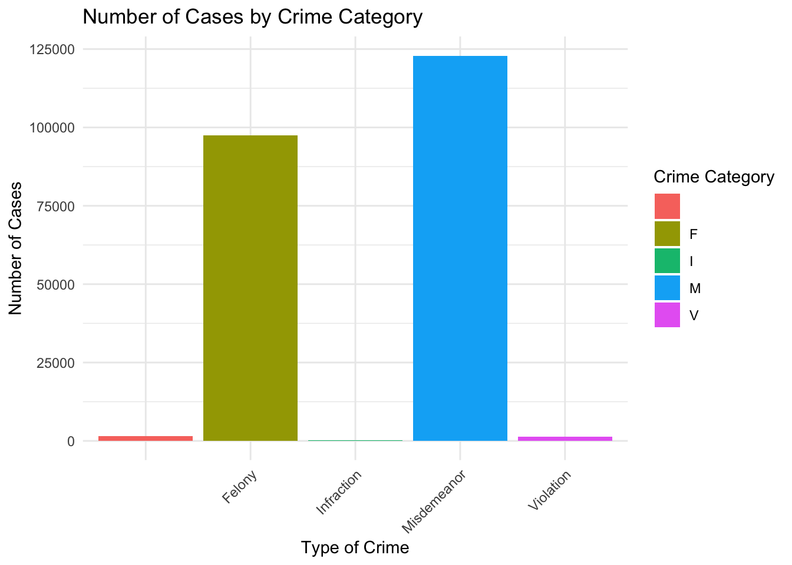

Principles for NYPD ARREST DATA
Transparency
Relevance: For the NYPD Arrest Data, transparency involves providing clear, accessible information about how arrests are defined, categorized, and recorded. It is crucial for the NYPD Arrest Data as it ensures that the data collection and reporting processes are open and understandable to the public.
Adhering to the practice: Transparency would be enhanced by releasing detailed metadata with the dataset, explanations of each category, the decision-making processes behind data collection, and any changes or inconsistencies in data recording over time.
Limitations and potential for misuse: A limitation in analyzing the NYPD Arrest Data could be the potential under-reporting or misclassification of incidents. Misuse of the data could occur for not understanding the systemic factors influencing policing, leading to skewed narratives about crime in different communities.
Justice
Relevance: In the case of NYPD arrest data, justice means ensuring that the data collection and reporting process is fair and does not disproportionately target or negatively impact specific communities, especially marginalized groups.
Adhering to the practice: For fairness, NYPD should analyze arrest data for bias and disproportionality, particularly regarding race, ethnicity, and neighborhood. Corrective actions should be informed by these analyses to ensure equitable policing. Transparently sharing the outcomes with the public will further uphold justice and build community trust.
Limitations and potential for misuse: The principle of justice faces the challenge of systemic biases in the NYPD Arrest Data, with issues like racial disparities. This complexity makes it difficult to directly address these biases through data analysis.
Respect for Persons
Relevance: This principle emphasizes the importance of respecting the dignity and rights of individuals who are arrested, ensuring that their personal data is handled with enough privacy.
Adhering to the practice: For the NYPD Arrest Data, this means implementing strict data privacy measures to protect the identities of individuals, especially in cases that have not led to convictions. Additionally, it would require careful consideration of how data is shared in public and so to prevent stigmatization or harm to individuals’ futures.
Limitations and potential for misuse: Protecting people’s privacy in the NYPD Arrest Data is hard because the dataset is big and has a lot of detailed information that could be used to identify someone. If the data isn’t kept anonymous, it might be used wrongly to single out people or places, causing problems like unfair treatment or more police attention.
Conclusion
Using these principles with the NYPD Arrest Data means we need to carefully consider how this data is collected and used. It’s important to keep talking to the communities involved, be clear about what data could be shown, watch out for any biases, and make sure to protect people’s privacy and treat them with respect in the data.
Expanlantory Analysis part 2
It shows all range of age level in the data, no unusual data.
| PERP_SEX | n |
|---|---|
| F | 38963 |
| M | 181602 |
| U | 2978 |
There are three big categories of sexes:male,female,undefined.
| OFNS_DESC | PD_DESC_Details |
|---|---|
| ADMINISTRATIVE CODE | ADM.CODE,UNCLASSIFIED MISDEMEA, ALCOHOLIC BEVERAGES,PUBLIC CON, ADM.CODE,UNCLASSIFIED VIOLATIO, UNLAWFUL DISCLOSURE OF AN INTIMATE IMAGE, PEDDLING,UNLAWFUL, PARKR&R,UNCLASSIFIED VIOLATION |
| ADMINISTRATIVE CODES | NOISE,UNECESSARY |
| AGRICULTURE & MRKTS LAW-UNCLASSIFIED | TORTURE/INJURE ANIMAL CRUELTY, ABANDON ANIMAL |
| ALCOHOLIC BEVERAGE CONTROL LAW | ALCOHOLIC BEVERAGE CONTROL LAW |
| ANTICIPATORY OFFENSES | CONSPIRACY 6, 5, FACILITATION 4, CRIMINAL, SOLICITATION 4, CRIMINAL |
| ARSON | ARSON 2,3,4, ARSON 1 |
| ASSAULT 3 & RELATED OFFENSES | ASSAULT 3, MENACING,UNCLASSIFIED, OBSTR BREATH/CIRCUL |
| BURGLAR'S TOOLS | BURGLARS TOOLS,UNCLASSIFIED |
| BURGLARY | BURGLARY,UNCLASSIFIED,UNKNOWN, BURGLARY,RESIDENCE,NIGHT |
| CANNABIS RELATED OFFENSES | CANNABIS SALE, 3, CANNABIS POSSESSION, 3, CANNABIS SALE, 2&1, CANNABIS POSSESSION, 2&1, CANNABIS SALE, CANNABIS SALE, AGGRAVATED, CANNABIS POSSESSION |
| CHILD ABANDONMENT/NON SUPPORT | CHILD ABANDONMENT |
| CRIMINAL MISCHIEF & RELATED OF | CRIMINAL MISCHIEF,UNCLASSIFIED 4, CRIMINAL MIS 2 & 3, CRIMINAL MISCHIEF 4TH, GRAFFIT, MISCHIEF,CRIMINAL, UNCL 2ND, MISCHIEF 1,CRIMINAL,EXPLOSIVE, TAMPERING 3,2, CRIMINAL, TAMPERING 1,CRIMINAL, MISCHIEF, CRIMINAL 4, BY FIRE, RECKLESS ENDANGERMENT OF PROPE, FALSE ALARM FIRE, MISCHIEF, CRIMINAL 4, OF MOTOR, MISCHIEF, CRIMINAL 3 & 2, OF M |
| CRIMINAL TRESPASS | TRESPASS 2, CRIMINAL, TRESPASS 3, CRIMINAL |
| DANGEROUS DRUGS | CONTROLLED SUBSTANCE,POSSESS., CONTROLLED SUBSTANCE, POSSESSI, CONTROLLED SUBSTANCE,INTENT TO, CONTROLLED SUBSTANCE, SALE 4, CONTROLLED SUBSTANCE,SALE 3, CONTROLLED SUBSTANCE, INTENT T, CONTROLLED SUBSTANCE,SALE 1, DRUG PARAPHERNALIA, POSSESSE, SALE SCHOOL GROUNDS, CONTROLLED SUBSTANCE,SALE 2, POSS METH MANUFACT MATERIAL, CONTROLLED SUBSTANCE, SALE 5, SALES OF PRESCRIPTION, SALE SCHOOL GROUNDS 4 |
| DANGEROUS WEAPONS | CRIMINAL POSSESSION WEAPON, WEAPONS, POSSESSION, ETC, WEAPONS POSSESSION 3, CRIMINAL DISPOSAL FIREARM 1, MANUFATURE, TRANSPORT, DEFACE, ETC..., CRIM POS WEAP 4, WEAPONS,MFR,TRANSPORT,ETC., WEAPONS DISPOSITION OF, UNFINSH FRAME 2, FIREARMS LICENSING LAWS |
| DISORDERLY CONDUCT | DISORDERLY CONDUCT |
| DISRUPTION OF A RELIGIOUS SERV | DIS. CON.,AGGRAVATED |
| ENDAN WELFARE INCOMP | INCOMPETENT PERSON,RECKLESSY ENDANGERING, INCOMPETENT PERSON,KNOWINGLY ENDANGERING |
| ESCAPE 3 | ESCAPE 3 |
| FELONY ASSAULT | STRANGULATION 1ST, ASSAULT 2,1,UNCLASSIFIED, ASSAULT POLICE/PEACE OFFICER |
| FELONY SEX CRIMES | STALKING COMMIT SEX OFFENSE |
| FOR OTHER AUTHORITIES | U.S. CODE UNCLASSIFIED, FUGITIVE/OTHER JURISDICTION NYS, FUGITIVE/OTHER STATES, NYS UNCLASSIFIED, NYS PAROLE VIOLATION, NYC UNCLASSIFIED WARRANT, NYS PROBATION, F.C.A. ORDER OF PROTECTION, F.C.A. NON SUPPORT |
| FORGERY | FORGERY,ETC.,UNCLASSIFIED-FELO, FORGERY,M.V. REGISTRATION, FORGERY,PRESCRIPTION |
| FRAUDS | IMPERSONATION 2, PUBLIC SERVAN, FRAUD,UNCLASSIFIED-MISDEMEANOR, CHECK,BAD, COMPUTER UNAUTH. USE/TAMPER |
| FRAUDULENT ACCOSTING | ACCOSTING,FRAUDULENT |
| GAMBLING | GAMBLING, DEVICE, POSSESSION, GAMBLING 2,PROMOTING,UNCLASSIF, GAMBLING 1,PROMOTING,POLICY, GAMBLING 1,PROMOTING,BOOKMAKIN, GAMBLING 2, PROMOTING, POLICY- |
| GRAND LARCENY | LARCENY,GRAND FROM PERSON,UNCL, LARCENY,GRAND FROM OPEN AREAS, UNATTENDED, AGGRAVATED GRAND LARCENY OF ATM, LARCENY,GRAND BY EXTORTION, LARCENY,GRAND BY THEFT OF CREDIT CARD, LARCENY,GRAND FROM BUILDING (NON-RESIDENCE) UNATTENDED |
| GRAND LARCENY OF MOTOR VEHICLE | LARCENY,GRAND OF AUTO |
| HARRASSMENT 2 | HARASSMENT,SUBD 1,CIVILIAN, HARASSMENT,SUBD 3,4,5 |
| HOMICIDE-NEGLIGENT,UNCLASSIFIE | HOMICIDE,NEGLIGENT,UNCLASSIFIE |
| HOMICIDE-NEGLIGENT-VEHICLE | HOMICIDE, NEGLIGENT, VEHICLE, |
| INTOXICATED & IMPAIRED DRIVING | INTOXICATED DRIVING,ALCOHOL, IMPAIRED DRIVING,DRUG |
| INTOXICATED/IMPAIRED DRIVING | INTOXICATED DRIVING,ALCOHOL, IMPAIRED DRIVING, DRUGS |
| JOSTLING | JOSTLING |
| KIDNAPPING | LURING A CHILD |
| KIDNAPPING & RELATED OFFENSES | KIDNAPPING 2, IMPRISONMENT 1,UNLAWFUL, KIDNAPPING 1, CUSTODIAL INTERFERENCE 1 |
| MISCELLANEOUS PENAL LAW | PUBLIC ADMINISTRATION,UNCLASSI, CRIMINAL CONTEMPT 1, MENACING 1ST DEGREE (VICT NOT, RECKLESS ENDANGERMENT 1, IMPERSONATION 1, POLICE OFFICE, AGGRAVATED CRIMINAL CONTEMPT, BRIBERY,PUBLIC ADMINISTRATION, FORGERY-ILLEGAL POSSESSION,VEH, VEHICULAR ASSAULT (INTOX DRIVE, BAIL JUMPING 1 & 2, MAKING TERRORISTIC THREAT, AGGRAVATED HARASSMENT 1, TRESPASS 4,CRIMINAL SUB 2, UNAUTHORIZED USE VEHICLE 2, CONSPIRACY 4, 3, THEFT OF SERVICES- CABLE TV SE, SOLICITATION 3,2,1, CRIMINAL, TRESPASS 1,CRIMINAL, PROMOTING A SEXUAL PERFORMANCE, ESCAPE 2,1, FALSE REPORT 1,FIRE, BRIBERY,FRAUD, CONSPIRACY 2, 1, COERCION 1, TAMPERING WITH A WITNESS, FACILITATION 3,2,1, CRIMINAL, POSTING ADVERTISEMENTS, EXPOSURE OF A PERSON, USURY,CRIMINAL, ENTERPRISE CORRUPTION, USE OF A CHILD IN A SEXUAL PER, SUPP. ACT TERR 2ND, PERJURY 2,1,ETC, END WELFARE VULNERABLE ELDERLY PERSON, RIOT 1, FIREWORKS, POSSESS/USE, NUISANCE, CRIMINAL |
| MOVING INFRACTIONS | UNLICENSED OPERATOR, SEAT BELTS, IMPAIRED DRIVING / ALCOHOL, FAIL TO STOP ON SIGNAL, USE CELL PHONE WHILE DRIVING |
| MURDER & NON-NEGL. MANSLAUGHTE | MURDER,UNCLASSIFIED, MANSLAUGHTER,UNCLASSIFIED - NO |
| NYS LAWS-UNCLASSIFIED FELONY | NY STATE LAWS,UNCLASSIFIED FEL, CAUSE SPI/KILL ANIMAL |
| OFF. AGNST PUB ORD SENSBLTY & | AGGRAVATED HARASSMENT 2, LEWDNESS,PUBLIC, FALSE REPORT UNCLASSIFIED, MATERIAL OFFENSIV, FALSE REPORT BOMB, RADIO DEVICES,UNLAWFUL POSSESS, SALE OF UNAUTHORIZED RECORDING, RIOT 2/INCITING, NUISANCE,CRIMINAL,UNCLASSIFIED, ASSEMBLY,UNLAWFUL |
| OFFENSES AGAINST PUBLIC ADMINI | CONTEMPT,CRIMINAL, RESISTING ARREST, PUBLIC ADMINISTATION,UNCLASS M, PERJURY 3,ETC., BAIL JUMPING 3 |
| OFFENSES AGAINST PUBLIC SAFETY | PUBLIC SAFETY,UNCLASSIFIED MIS, FIREWORKS, SALE |
| OFFENSES AGAINST THE PERSON | RECKLESS ENDANGERMENT 2, IMPRISONMENT 2,UNLAWFUL, CUSTODIAL INTERFERENCE 2, COERCION 2 |
| OFFENSES INVOLVING FRAUD | FORGERY,ETC.-MISD., RECORDS,FALSIFY-TAMPER, BRIBERY,COMMERCIAL |
| OFFENSES RELATED TO CHILDREN | CHILD,OFFENSES AGAINST,UNCLASS |
| OTHER OFFENSES RELATED TO THEF | THEFT OF SERVICES, UNCLASSIFIE, THEFT,RELATED OFFENSES,UNCLASS, CREDIT CARD,UNLAWFUL USE OF |
| OTHER STATE LAWS | NY STATE LAWS,UNCLASSIFIED VIO, A.B.C.,FALSE PROOF OF AGE |
| OTHER STATE LAWS (NON PENAL LA | NY STATE LAWS,UNCLASSIFIED MIS, PUBLIC HEALTH LAW,UNCLASSIFIED, TAX LAW |
| OTHER STATE LAWS (NON PENAL LAW) | GENERAL BUSINESS LAW / UNCLASSIFIED |
| OTHER TRAFFIC INFRACTION | TRAFFIC,UNCLASSIFIED INFRACTIO, LEAVING THE SCENE / PROPERTY DAMAGE / INJURED ANIMAL, IMPROPER LIGHTS, FAIL TO SIGNAL |
| PARKING OFFENSES | UNCLASSIFIED |
| PETIT LARCENY | LARCENY,PETIT FROM OPEN AREAS,, LARCENY,PETIT BY ACQUIRING LOS |
| POSSESSION OF STOLEN PROPERTY | STOLEN PROPERTY 3,POSSESSION, STOLEN PROPERTY-MOTOR VEH 2ND,, STOLEN PROPERTY 2,1,POSSESSION, STOLEN PROPERTY 2,POSSESSION B |
| PROSTITUTION & RELATED OFFENSES | SEX TRAFFICKING, PROSTITUTION 4,PROMOTING&SECUR, PROSTITUTION, PROSTITUTION, PATRONIZING 4, 3, PROSTITUTION 3, PROMOTING UNDE, PROSTITUTION 3,PROMOTING BUSIN, PROSTITUTION,PERMITTING |
| RAPE | RAPE 1, RAPE 3, RAPE 2 |
| ROBBERY | ROBBERY,OPEN AREA UNCLASSIFIED, ROBBERY,CAR JACKING, ROBBERY,GAS STATION |
| SEX CRIMES | CHILD, ENDANGERING WELFARE, SEXUAL ABUSE 3,2, SEXUAL ABUSE, SEXUAL MISCONDUCT,INTERCOURSE, FORCIBLE TOUCHING, AGGRAVATED SEXUAL ASBUSE, OBSCENE MATERIAL - UNDER 17 YE, SODOMY 1, OBSCENITY 1, COURSE OF SEXUAL CONDUCT AGAIN, SODOMY 3, INCEST 3, SEXUAL MISCONDUCT,DEVIATE, SODOMY 2, SEX CRIMES, OBSCENITY, PERFORMANCE 3 |
| THEFT OF SERVICES | UNAUTH. SALE OF TRANS. SERVICE |
| THEFT-FRAUD | FRAUD,UNCLASSIFIED-FELONY, MONEY LAUNDERING 1 & 2, COMPUTER TAMPER/TRESSPASS |
| UNAUTHORIZED USE OF A VEHICLE | UNAUTHORIZED USE VEHICLE 3 |
| UNLAWFUL POSS. WEAP. ON SCHOOL | UNLAWFUL POSS. WEAPON UPON SCH |
| VEHICLE AND TRAFFIC LAWS | TRAFFIC,UNCLASSIFIED MISDEMEAN, LEAVING SCENE-ACCIDENT-PERSONA, RECKLESS DRIVING |

Misdemeanor appears to be the most common, followed by felonies. The crime incidents of infraction and violation are the least with small numbers of cases.
This bar chart illustrates the racial composition of crime across ten categories, with the green segment indicating a dominant proportion of Black individuals in every category, followed by White Hispanics, represented by the pink segment. The smallest proportions are contributed by Asian/Pacific Islanders and American Indian/Alaskan Natives, shown in orange and red. This visualization provides a proportional breakdown by race, with each color-coded segment corresponding to the percentage of total incidents attributed to that racial group, reflecting the diversity and potential disparities within crime statistics.
This bar chart illustrates the frequency of different crimes for various age groups. Notably, the 25-44 age group shows the highest incident counts in every category, while the groups under 18 and over 65 have significantly fewer incidents across all crime categories.

The graph illustrates that the 25-44 age group has the highest incidence of felonies, a significant number of misdemeanors, and relatively lower counts for infractions and violations, suggesting this age range is the most involved in crime. The other age groups contribute fewer incidents across all categories, with the least involvement by those under 18 and over 65.